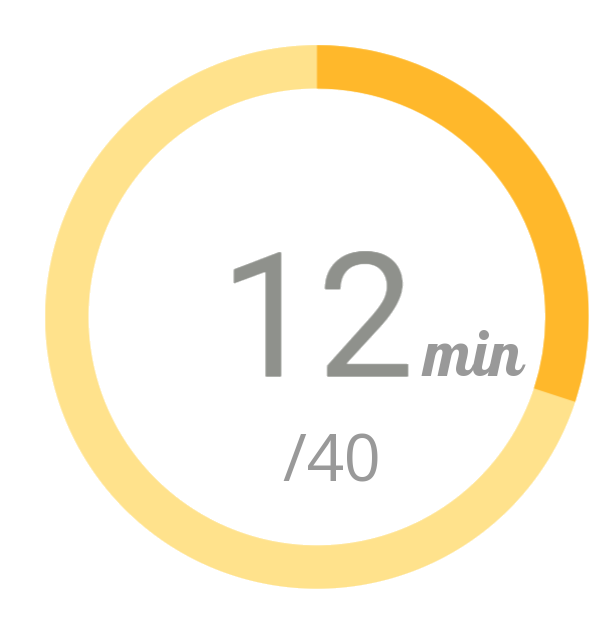
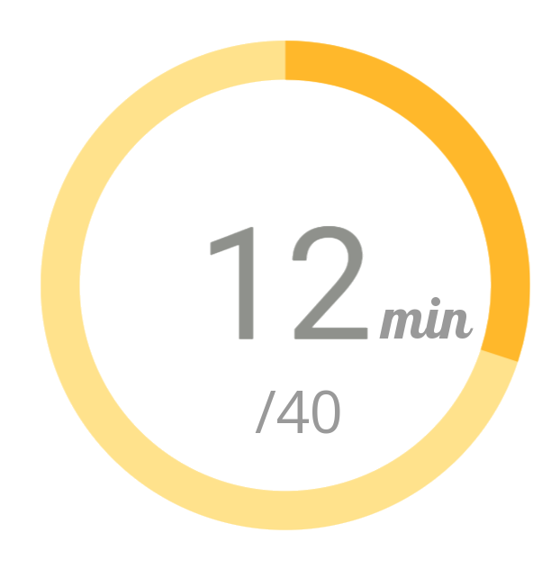

Presa de glucèmia
Es registrarà la glucèmia a les 14:00.
Canviar horaEsport realitzat
500 Kcal
2 Km
Administració insulina ràpida
Administrar 2 UI.
FetAdministració medicació
Administrar metformina abans de sopar.
FetEs registrarà la glucèmia a les 14:00.
Canviar hora500 Kcal
2 Km
Administrar 2 UI.
FetAdministrar metformina abans de sopar.
Fet